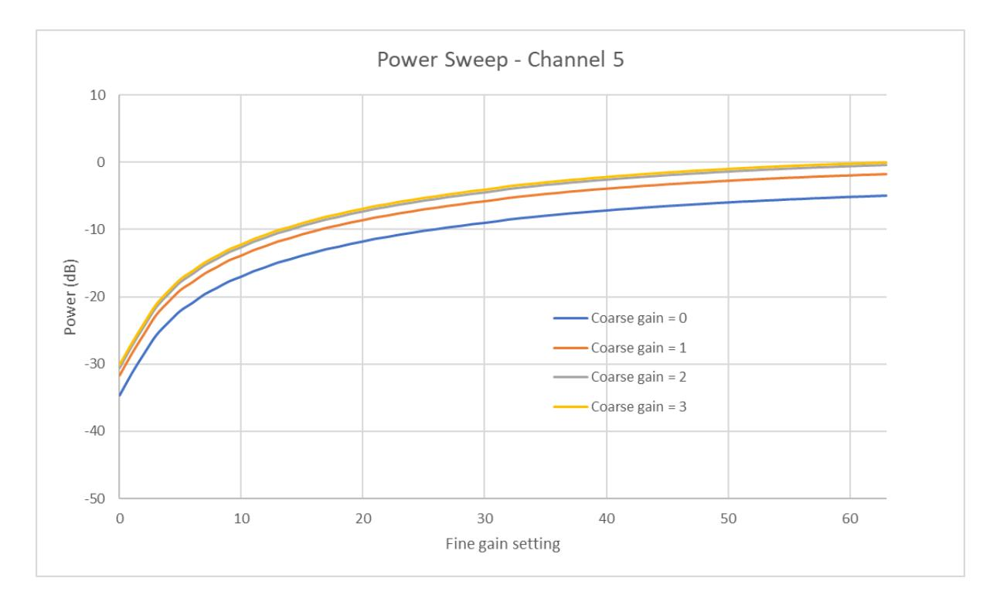
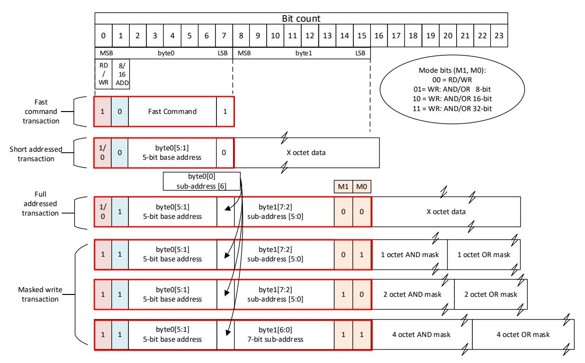
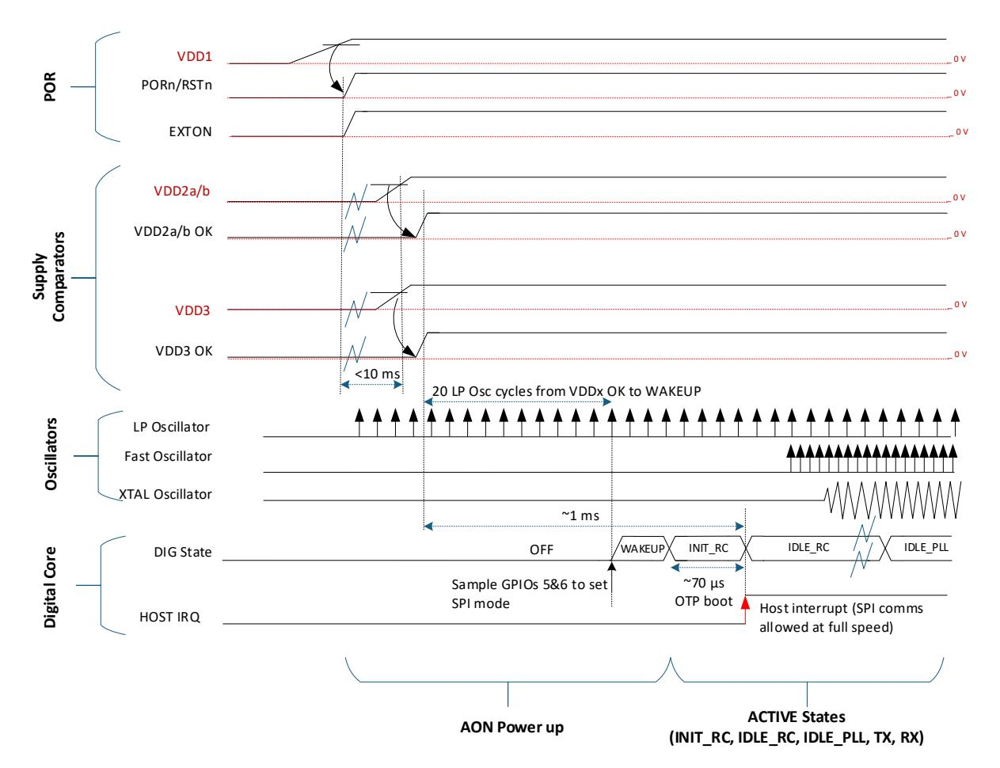
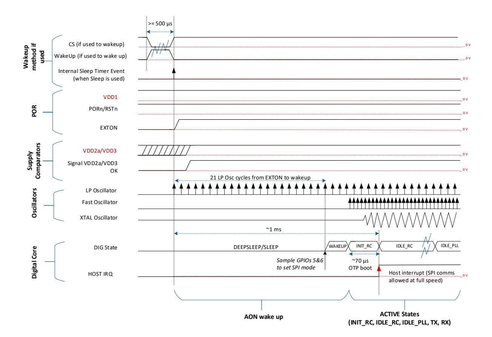

The DW3000 IC family is a fully integrated single chip Ultra Wideband (UWB) low-power low-cost transceiver IC compliant to IEEE802.15.4- 2015 and IEEE802.15.4z (BPRF mode). It can be used in 2-way ranging, TDoA and PDoA systems to locate assets to an accuracy of 10 cm.
DW3000
UWB Transceiver
| 1 | IC DESCRIPTION 5 | |
|---|---|---|
| 1.1 | DW3000 VARIANTS 6 | |
| 1.2 | DW3000 BACKWARDS COMPATIBILITY WITH | |
| DW1000 6 | ||
| 2 | PIN CONFIGURATIONS AND FUNCTION | |
| DESCRIPTIONS 7 | ||
| 3 | ELECTRICAL SPECIFICATIONS 11 | |
| 3.1 | NOMINAL OPERATING CONDITIONS 11 | |
| 3.2 | DC CHARACTERISTICS 11 | |
| 3.3 | RECEIVER AC CHARACTERISTICS 12 | |
| 3.4 | RECEIVER SENSITIVITY CHARACTERISTICS 13 | |
| 3.5 | REFERENCE CLOCK AC CHARACTERISTICS 14 | |
| 3.6 | TRANSMITTER AC CHARACTERISTICS 15 | |
| 3.7 | LINK BUDGET 15 | |
| 3.8 |
TEMPERATURE AND VOLTAGE MONITOR
CHARACTERISTICS 16 |
|
| 3.9 | LOCATION FUNCTIONALITY CHARACTERISTICS 16 | |
| 3.10 | ABSOLUTE MAXIMUM RATINGS 17 | |
| 3.11 | TYPICAL PERFORMANCE 17 | |
| 3.11.1 | Transmit Spectrum 17 | |
| 3.11.2 | Transmit Power Adjustment 19 | |
| 3.11.3 | Receiver Blocking 20 | |
| 3.11.4 | Ranging 21 | |
| 4 | FUNCTIONAL DESCRIPTION 22 | |
| 4.1 | PHYSICAL LAYER MODES 22 | |
| 4.2 | SUPPORTED CHANNELS AND BANDWIDTHS 22 | |
| 4.3 | SUPPORTED BIT RATES AND PULSE REPETITION | |
| FREQUENCIES (PRF) 22 | ||
| 4.4 | SYMBOL TIMINGS 22 | |
| 4.5 | FRAME FORMAT IEEE802.15.4-2011, | |
| IEEE802.15.4-2015 23 | ||
| 4.6 | PACKET FORMATS OF IEEE STD 802.15.4Z™ . 23 | |
| 4.7 | PROPRIETARY LONG FRAMES 23 | |
| 4.8 | NO DATA FRAMES 23 | |
| 4.9 | HOST CONTROLLER INTERFACE 24 | |
| 4.9.1 | SPI Functional Description 24 | |
| 4.9.2 | SPI Timing Parameters 24 | |
| 4.9.3 | SPI Operating Modes 25 | |
| 4.9.4 | SPI Transaction Formatting 27 | |
| 4.9.5 |
GPIO and SPI I/O internal pull
up/down 28 |
|
| 4.10 | REFERENCE CRYSTAL OSCILLATOR 29 | |
| 4.10.1 | Calculation of external capacitor | |
| values for frequency trim 29 | ||
| 5 | OPERATIONAL STATES 31 | |
| 5.1 | OVERVIEW 31 | |
| 5.2 | OPERATING STATE TRANSITIONS 32 |
| 6 | POWERING DW300033 | ||||
|---|---|---|---|---|---|
| 6.1 | LOWEST BILL OF MATERIALS (BOM) POWERING | ||||
| SCHEME35 | |||||
| 6.2 | HIGHEST EFFICIENCY POWERING SCHEME 35 | ||||
| 6.3 | MOBILE POWERING SCHEME 36 | ||||
| 6.4 | TYPICAL POWER PROFILES37 | ||||
| 6.4.1 | TX current profile for the minimal | ||||
| BOM | 37 | ||||
| 6.4.2 | TX current profile for high efficiency | ||||
| modes | 38 | ||||
| 6.4.3 | RX current profile39 | ||||
| 6.4.4 | RX current profile for high efficiency | ||||
| BOMs | 39 | ||||
| 6.4.5 | Typical TWR current profile 41 | ||||
| 6.5 | INTERNAL POWER SUPPLY DISTRIBUTION 42 | ||||
| 7 | APPLICATION INFORMATION43 | ||||
| 7.1 | APPLICATION CIRCUIT DIAGRAM (LOWEST BOM | ||||
| POWERING SCHEME) 43 | |||||
| 7.2 | BOOST CIRCUIT DIAGRAM 43 | ||||
| 7.3 | RECOMMENDED CHIP LAYOUT AND STACK-UP 44 | ||||
| 7.3.1 | WLCSP variant Stack-up44 | ||||
| 7.3.2 | QFN variant Stack-up45 | ||||
| 7.4 | RECOMMENDED COMPONENTS 46 | ||||
| 8 | REFLOW PROFILES 47 | ||||
| 8.1 | REFLOW PROFILE OF THE WLCSP PACKAGE 47 | ||||
| 8.2 | REFLOW PROFILE OF THE QFN PACKAGE 47 | ||||
| 9 | PACKAGING & ORDERING INFORMATION 48 | ||||
| 9.1 | PACKAGE DIMENSIONS WLCSP 48 | ||||
| 9.2 | QFN CHIP VARIANT49 | ||||
| 9.2.1 | Package Dimensions QFN49 | ||||
| 9.2.2 | Tape and Reel packaging | ||||
| information: QFN chip variant 49 | |||||
| 9.2.3 | Tape and Reel packaging | ||||
| information: WLCSP chip variant51 | |||||
| 9.2.4 | WLCSP, QFN Device Package Marking | ||||
| 53 | |||||
| 10 | GLOSSARY54 | ||||
| 11 | REFERENCES 55 | ||||
| 12 | DOCUMENT HISTORY55 | ||||
| 13 | FURTHER INFORMATION 56 | ||||
| FIGURE 1: IC BLOCK DIAGRAM 5 |
|---|
| FIGURE 2: THE QFN TOP VIEW PIN ASSIGNMENTS 7 |
| FIGURE 3: THE WLCSP PIN ASSIGNMENTS 7 |
| FIGURE 4: TYPICAL TRANSMIT SPECTRUM CHANNEL 5 17 |
| FIGURE 5: TYPICAL TRANSMIT SPECTRUM CHANNEL 9 18 |
| FIGURE 6 TX POWER COARSE AND FINE GAIN SETTINGS - |
| CHANNEL 5 19 |
| FIGURE 7 TX POWER COARSE AND FINE GAIN SETTINGS - |
| CHANNEL 9 19 |
| FIGURE 8 BLOCKING PERFORMANCE - CHANNEL 5 20 |
| FIGURE 9 BLOCKING PERFORMANCE - CHANNEL 9 20 |
| FIGURE 10 RANGING PERFORMANCE - CHANNEL 5 21 |
| FIGURE 11 RANGING PERFORMANCE - CHANNEL 9 21 |
| FIGURE 12: IEEE802.15.4-2011 PPDU STRUCTURE 23 |
| FIGURE 13: SPI TIMING DIAGRAM 24 |
| FIGURE 14: DW3000 SPIPHA=0 TRANSFER PROTOCOL 25 |
| FIGURE 15: DW3000 SPIPHA=1 TRANSFER PROTOCOL 26 |
| FIGURE 16: SPI COMMAND FORMATTING 27 |
| FIGURE 17: SPI AND GPIO PULL UP/DOWN 28 |
| FIGURE 18 CRYSTAL MODEL 29 |
| FIGURE 19 CRYSTAL TRIM PLOT 30 |
| FIGURE 20: OPERATING STATE TRANSITIONS 32 |
| FIGURE 21: TIMING DIAGRAM FOR COLD START POR 33 |
| FIGURE 22 TIMING DIAGRAM FOR WARM START 34 |
| FIGURE 23: LOWEST BOM POWERING OPTION 35 |
| FIGURE 24: SINGLE O/P BUCK SMPS OPTION 35 |
| FIGURE 25: MOBILE OPTION 36 |
|---|
| FIGURE 26: CURRENT PROFILE WHEN TRANSMITTING A |
| FRAME (6.8MBPS) IN LOWEST BOM USE CASE 37 |
| FIGURE 27: CURRENT CONSUMPTION DURING TX FOR HIGH |
| EFFICIENCY POWERING MODES38 |
| FIGURE 28: CURRENT PROFILE FOR RECEIVING A FRAME39 |
| FIGURE 29: CURRENT CONSUMPTION DURING RX FOR HIGH |
| EFFICIENCY POWERING MODES40 |
| FIGURE 30 CURRENT PROFILE OF INITIATOR IN THE DS-TWR |
| WITH EMBEDDED DATA TO FRAMES41 |
| FIGURE 31: INTERNAL POWER DISTRIBUTION42 |
| FIGURE 32: DW3000 WLCSP APPLICATION CIRCUIT 43 |
| FIGURE 33 BOOST CIRCUIT 43 |
| FIGURE 34 RECOMMENDED WLCSP STACK-UP44 |
| FIGURE 35 RECOMMENDED QFN STACK-UP45 |
| FIGURE 36 REFLOW PROFILE OF THE WLCSP PACKAGE47 |
| FIGURE 37: PACKAGE DIMENSIONS WLCSP 48 |
| FIGURE 38: PACKAGE DIMENSIONS QFN 49 |
| FIGURE 39 QFN TAPE ORIENTATION AND DIMENSIONS 49 |
| FIGURE 40 QFN REEL INFORMATION 50 |
| FIGURE 41 WLCSP TAPE ORIENTATION AND DIMENSIONS51 |
| FIGURE 42 WLCSP REEL INFORMATION 52 |
| FIGURE 43: ORIGINAL DEVICE PACKAGE MARKINGS 53 |
| FIGURE 44. NEW DEVICE PACKAGE MARKINGS (AFTER PCN |
| 2026)53 |
| TABLE 1: DW3000 VARIANTS 6 |
|---|
| TABLE 2: DW3000 QFN & WLCSP PIN FUNCTIONS 8 |
| TABLE 3: ABBREVIATIONS 10 |
| TABLE 4: NOMINAL OPERATING CONDITIONS 11 |
| TABLE 5: DC CHARACTERISTICS 11 |
| TABLE 6: RECEIVER AC CHARACTERISTICS 12 |
| TABLE 7 TEST CONDITIONS OF THE RX SENSITIVITY |
| MEASUREMENTS 13 |
| TABLE 8: RX SENSITIVITY CHARACTERISTICS (CHANNEL 5). 13 |
| TABLE 9: RX SENSITIVITY CHARACTERISTICS (CHANNEL 9). 13 |
| TABLE 10: REFERENCE CLOCK AC CHARACTERISTICS 14 |
| TABLE 11: TRANSMITTER AC CHARACTERISTICS 15 |
| TABLE 12: TYPICAL LINK BUDGET FOR DW3110 15 |
| TABLE 13: TEMPERATURE AND VOLTAGE MONITOR |
| CHARACTERISTICS 16 |
| TABLE 14: LOCATION ACCURACY CHARACTERISTICS16 | |
|---|---|
| TABLE 15: ABSOLUTE MAXIMUM RATINGS17 | |
| TABLE 16 UWB CHANNELS SUPPORTED22 | |
| TABLE 17 PRF AND DATA RATES SUPPORTED22 | |
| TABLE 18 DW3000 SYMBOL TIMINGS DURATION22 | |
| TABLE 19 SPI TIMING PARAMETERS25 | |
| TABLE 20 SPI MODE CONFIGURATION25 | |
| TABLE 21: OPERATING STATES 31 | |
| TABLE 22 RECOMMENDED COMPONENTS 46 | |
| TABLE 23 CRITICAL PARAMETERS FOR LEAD FREE SOLDER OF | |
| THE WLSCP PACKAGE 47 | |
| TABLE 24: GLOSSARY OF TERMS 54 | |
| Table 25: Document History | 55 |
Decawave reserves the right to change product specifications without notice. As far as possible changes to functionality and specifications will be issued in product specific errata sheets or in new versions of this document. Customers are advised to check with Decawave for the most recent updates on this product.
Copyright © 2020 Decawave Ltd
Decawave products are not authorized for use in safety-critical applications (such as life support) where a failure of the Decawave product would reasonably be expected to cause severe personal injury or death. Decawave customers using or selling Decawave products in such a manner do so entirely at their own risk and agree to fully indemnify Decawave and its representatives against any damages arising out of the use of Decawave products in such safety-critical applications.
Caution! ESD sensitive device. Precaution should be used when handling the device in order to prevent permanent damage.
The DW3000, as supplied from Decawave, has not been certified for use in any particular geographic region by the appropriate regulatory body governing radio emissions in that region although it is capable of such certification depending on the region and the manner in which it is used.
All products developed by the user incorporating the DW3000 must be approved by the relevant authority governing radio emissions in any given jurisdiction prior to the marketing or sale of such products in that jurisdiction and user bears all responsibility for obtaining such approval as needed from the appropriate authorities.
FiRa, FiRa Consortium, the FiRa logo, the FiRa Certified logo, and FiRa tagline are trademarks or registered trademarks of FiRa Consortium or its licensor(s)/ supplier(s) in the US and other countries and may not be used without permission. All other trademarks, service marks, and product or service names are trademarks or registered trademarks of their respective owners.
DW3000 is a fully integrated low-power, single chip CMOS RF 6.5GHz-8GHz IR-UWB transceiver IC compliant with the IEEE 802.15.4-2015 (HRP UWB PHY), IEEE 802.15.4z and IEEE 802.15.8 standards.
DW3000 consists of an analog front end containing a receiver and a transmitter and a digital back end that interfaces to an off-chip host processor. A TX/RX switch is used to connect the receiver or transmitter to the antenna port. Temperature and voltage monitors are provided on-chip.
The receiver consists of an RF front end which amplifies the received signal in a low-noise amplifier before downconverting it directly to baseband. The receiver is optimized for wide bandwidth, high linearity and low noise figure. This allows each of the supported IEEE802.15.4-2015 UWB channels to be down converted with minimum additional noise and distortion. The baseband signal is demodulated and the resulting received data is made available to the host controller via SPI.
The transmit pulse train is generated by applying digitally encoded transmit data to the analog pulse generator. The pulse train is up-converted to a carrier generated by the synthesizer and centred on one of the permitted IEEE802.15.4-2015 UWB channels. The modulated RF waveform is amplified before transmission from the external antenna.
A variant of the IC is available which has two RF antenna ports and is used for Phase Difference of Arrival (PDoA) applications. In this variant the receiver switches between antenna ports to enable a PDoA measurement.
The IC has an on-chip One-Time Programmable (OTP) memory. This memory can be used to store calibration data such as TX power level and crystal initial frequency error adjustment.
The Always-On (AON) memory is 256 bytes and can be used to retain DW3000 configuration data during the lowest power operational states. The AON can operate directly from battery. This data is downloaded during crystal start up automatically.
DW3000 contains a phase-locked-loop (PLL) with integrated loop filters. This PLL provides the RF local oscillator signals for the Rx Mixer and the Tx RF frequency carrier to the Tx mixer. The channel information signal defines the output channel frequency as follows; channel 5 = 6489.6 MHz, channel 9 = 7987.2 MHz
The DW3000 has various debug and test options (RF loopback, event counters. test modes and more) and gives access to internal signals for on-the-bench debugging and to simplify production test.
The DW3000 incorporates Time Stamp system security features to prevent all known hacking type attacks such as 'imposter', 'cicada', 'parasite' 'record & replay' attacks etc.
The host interface includes a peripheral-only SPI for device communications and configuration. Several MAC features are implemented including CRC generation, CRC checking and receive frame filtering.
The following DW3000 variants exists:
| IC Variant |
Ordering Part
Number |
Type of package |
Number of
balls/pads |
PDoA support |
Operating
Temperature |
|---|---|---|---|---|---|
| DW3110 | DW3110TR13 | WLCSP | 52 | No | |
| DW3120 | DW3120TR13 | WLCSP | Yes | ||
| DW3210 | DW3210TR13 | QFN | 40 | No | -40℃ to +85℃ |
| DW3220 | DW3220TR13 | QFN | 40 | Yes | |
DW3000 is backward compatible with DW1000 on channel 5 and for data rates of 6.8 Mb/s and 850 kb/s.
The DW3000 chip can be supplied in two packages, QFN (40 pads) or WLSCP (52 balls). The pin assignments for packages is illustrated in Figure 2 and Figure 3 and the description is given in Table 2 below.
Figure 2: The QFN Top view pin assignments
|
Signal
Name |
QFN
Pin # |
WLCSP
Ball # |
I/O Type
(default) |
DESCRIPTION | |||
|---|---|---|---|---|---|---|---|
|
IRQ/
GPIO8 |
1 | B-1 | DIO (O-L) |
Interrupt request output from the DW3000 to the host processor. By
default IRQ is an active-high output but may be configured to be active low if required. For correct operation in SLEEP and DEEPSLEEP modes it should be configured for active high operation. This pin will float in SLEEP and DEEPSLEEP states and may cause spurious interrupts on the host unless pulled low externally (100kΩ recommended). When the IRQ functionality is not being used the pin may be reconfigured as a general purpose I/O line2 , GPIO8. |
|||
|
GPIO6 /
EXTRXE / SPIPHA |
2 | C-4 | DIO (I) |
General purpose I/O pin2
On power-up it acts as the SPIPHA (SPI phase selection) pin for configuring the SPI mode of operation. It may be configured for use as EXTRXE (External Receiver Enable). This pin goes high when the DW3000 is in receive mode. After power-up, the pin will default to a General Purpose I/O pin. |
|||
|
GPIO0/
RXOKLED |
3 | C-2 | DIO (I) |
General purpose I/O pin2
It may be configured for use as a RXOKLED driving pin that can be used to light a LED on reception of a good frame. |
|||
|
GPIO1/
SFDLED |
4 | D-3 | DIO (I) |
General purpose I/O pin2
It may be configured for use as a SFDLED driving pin that can be used to light a LED when SFD (Start Frame Delimiter) is found by the receiver. |
|||
|
GPIO5 /
EXTTXE / SPIPOL |
5 | D-1 | DIO (I) |
General purpose I/O pin2
On power-up it acts as the SPIPOL (SPI polarity selection) pin for configuring the SPI operation mode. After power-up, the pin will default to a General Purpose I/O pin. It may be configured for use as EXTTXE (External Transmit Enable). This pin goes high when the DW3000 is in transmit mode. |
|||
|
GPIO2 /
RXLED |
6 | E-4 | DIO (I) |
General purpose I/O pin2
It may be configured for use as a RXLED driving pin that can be used to light a LED during receive mode. |
|||
|
GPIO3 /
TXLED |
7 | E-2 | DIO (I) |
General purpose I/O pin2
It may be configured for use as a TXLED driving pin that can be used to light a LED following a transmission. |
|||
|
GPIO4/
EXTPA |
8 | F-1 | DIO (I) |
General purpose I/O pin2
It may be configured for use as EXTPA (External Power Amplifier). This pin can enable an external Power Amplifier. |
|||
|
GPIO7/
SYNC |
9 | G-2 | DIO (I) |
The SYNC input pin is used for external synchronisation. When the
SYNC input functionality is not being used this pin may be reconfigured as a general purpose I/O pin2 , GPIO7. This pin is internally pulled down. |
|||
| GND |
10
11 12 |
E-6
E-10 E-12 F7 |
G | RF ground pin1 | |||
| RF2 | 13 | H-5 | AIO |
RF port for antenna 2 (50 Ω single-ended RF connection). When in use
for PDoA, a series 2 pF capacitor is required on the pin. In non-PDoA chip variants, a 2 pF capacitor is not required, but it should be grounded with 50 Ω. A 50 Ω PCB trace from the RF2 port to the termination resistor is also required in this case. |
|||
| GND |
14
15 |
F-9
G-6 |
G | RF ground pin1 | |||
| 16 | G-10 | ||||||
| 17 | H-1 | ||||||
| H-3 | |||||||
| RF1 | 18 | H-11 | AIO |
RF port for antenna 1 (50 Ω single ended connection). A 2 pF capacitor is
required on the pin. |
|||
|
Signal
Name |
QFN
Pin # |
WLCSP
Ball # |
I/O Type
(default) |
DESCRIPTION | ||
|---|---|---|---|---|---|---|
| GND |
19
20 |
H-7
H-9 H-13 |
G | RF ground pin1 | ||
| XTI | 21 | H-15 | AI | Reference crystal input or external reference overdrive pin. | ||
| XTO | 22 | G-14 | AI |
Reference crystal output. Requires 1pF to the ground, only if external
clock is used, otherwise leave empty. |
||
| VDD2a | 28 | F-15 | P |
Voltage Supply (2.4V to 3.6V) 1.
F-15 requires isolation with a ferrite from B-15. |
||
| VDD2b | 23 | B-15 | P | Voltage Supply (2.4V to 3.6V) 1. | ||
| VSS2 | 24 |
D-11
E-14 |
G | Ground return for VDD2. | ||
| VSS3 | 25 |
C-12
D-13 |
G | Ground return for VDD3. | ||
| VDD3 | 26 | D-15 | P | Voltage Supply (1.5V to 3.6V) 1. | ||
| VTX_D | 27 | C-14 | PD | TX supply decoupling. Requires external capacitor to ground1 | ||
| VDD1 | 29 | B-13 | P |
Main power supply (1.62V – 3.6V). This pin also supplies the device I/O's
and Always-On domain1 . The following I/Os are supplied by this pin: WAKEUP, EXTON, RSTn, SPICLK, SPICSn, SPICDI and SPICDO. |
||
| VSS1 | 30 |
A-14
B-11 C-8 C-10 D-9 |
G | Ground return for VDD1. | ||
| EXTON | 31 | A-12 | DO (O-L) |
External device enable. Asserted during wake up process and held active
until device enters sleep mode. Can be used to control external DC-DC converters or other circuits that are not required when the device is in sleep mode so as to minimise power consumption. |
||
| WAKEUP | 32 | B-9 | DI |
When asserted into its active high state, the WAKEUP pin brings the
DW3000 out of SLEEP or DEEPSLEEP states into operational mode. This should be connected to ground if not used. |
||
| RSTn | 33 | A-10 | DIO (O-H) |
Reset pin. Active Low Output.
May be pulled low by external open drain driver to reset the DW3000. Must not be pulled high by external source. Asserting the RSTn pin will fully reset the device and is equivalent to a power cycle. |
||
| SPICLK | 34 | A-8 | DI | SPI peripheral clock input. | ||
|
SPICDI
(SPIMOSI) |
35 | B-7 | DI | SPI peripheral data input. | ||
|
SPICDO
(SPIMISO) |
36 | A-6 | D0 (O-L) | SPI peripheral data output. | ||
| SPICSn | 37 | B-5 | DI |
SPI chip select. This is an active low enable input. The high-to-low
transition on SPICSn signals the start of a new SPI transaction. SPICSn can also act as a wake-up signal to bring DW3000 out of either SLEEP or DEEPSLEEP states. |
||
| VIO_D | 38 | A-4 | PD |
IO supply decoupling. Internally connected to the VDD1 with switch to
allow disconnect from VDD1 for ultra-low power consumption mode. |
||
| VSS |
39
40 |
A-2
B-3 C-6 D-5 D-7 |
G | Ground return for internal digital supply1 | ||
1 Reference to the schematics and the layout. 2 GPIO pins are not suitable to drive LEDs directly. See Table 5 for details of the maximum current limit.
| ABBREVIATION | EXPLANATION | |||||
|---|---|---|---|---|---|---|
| AI | Analog Input. | |||||
| AIO | Analog Input / Output. | |||||
| AO | Analog Output. | |||||
| DI | Digital Input. | |||||
| DIO | Digital Input / Output. | |||||
| DO | Digital Output. | |||||
| G | Ground. | |||||
| P | Power Supply. | |||||
| PD | Power Decoupling. | |||||
| NC | No Connect. | |||||
| O-L | Defaults to output, low level after reset. | |||||
| O-H | Defaults to output, high level after reset. | |||||
| I | Defaults to input. | |||||
| Note: Any signal with the suffix 'n' indicates an active low signal. | ||||||
| Parameter | Min | Typ. | Max | Units | Condition/Note |
|---|---|---|---|---|---|
| Supply voltage VDD1 | 1.62 | 3.0 | 3.6 | V | |
| Supply voltage VDD2a and VDD2b | 2.4 | 3.0 | 3.6 | V | |
| Supply voltage VDD3 | 1.5 | 3.0 | 3.6 | V | |
|
Voltage on GPIO0-5, WAKEUP,
RSTn, SPICSn, SPIMOSI, SPICLK |
VDD1+0.3V | V |
Note that 3.6 V is the max voltage that
should be applied to these pins. |
Note: Unit operation is guaranteed by design when operating within these ranges. Sufficient headroom for any power supply voltage ripple should be considered in system designs.
Tamb = 25 ˚C, all supplies at 3.0 V.
| Parameter | Min. | Typ. | Max. | Units | Condition/Note |
|---|---|---|---|---|---|
| Supply current DEEP SLEEP mode | 260 | ||||
| Supply current SLEEP mode | 850 | nA | |||
|
Supply current IDLE_PLL mode
channel 5 |
18 | ||||
|
Supply current IDLE_PLL mode
channel 9 |
32 | mA | |||
| Supply current IDLE_RC mode | 8 | ||||
| Supply current OSC start-up | 1.5 | ||||
| Current single frame Tx/Rx with 47uF capacitor | |||||
| TX CH5 | 14 | Refer to section 6.4.1 for details | |||
| TX CH9 | 17 | of single TX frame configuration. | |||
| RX CH5 | 16 | mA |
Refer to section 6.4.3 for details
of single RX frame configuration. |
||
| RX CH9 | 19 | ||||
| Peak current continuous Tx/Rx | |||||
|
TX CH5 (nominal power
@ -41.3dBm/MHz) VDD2 |
23 | ||||
|
TX CH5 (nominal power
@ -41.3dBm/MHz) VDD3 |
25 | ||||
|
TX CH5 (maximum power
@ -32dBm/MHz1). VDD2 |
29 | ||||
|
TX CH5 (maximum power
@ -32dBm/MHz1). VDD3 |
25 |
Continuous TX mode is only used
as test mode. In normal device |
|||
|
TX CH9 (nominal power
@ -41.3dBm/MHz). VDD2 |
24 | mA |
operation the TX is powered up
for a frame transmission and then powered down. |
||
|
TX CH9 (nominal power
@ -41.3dBm/MHz). VDD3 |
35 | ||||
|
TX CH9 (maximum power
@ -32dBm/MHz1). VDD2 |
29 | ||||
|
TX CH9 (maximum power
@ -32dBm/MHz1). VDD3 |
35 | ||||
| RX CH5 | 72 | ||||
| RX CH9 | 88 | ||||
| Digital input voltage high |
0.7 *
VDD1 |
V |
| Parameter | Min. | Typ. | Max. | Units | Condition/Note | ||
|---|---|---|---|---|---|---|---|
| Digital input voltage low |
0.3 *
VDD1 |
||||||
| Digital output voltage high |
0.7 *
VDD1 |
Assumes 500 Ω load. | |||||
| Digital output voltage low |
0.3*
VDD1 |
||||||
| Digital output drive current | |||||||
| GPIOx, IRQ | 0.8 | mA |
While these IO can drive higher
currents than specified, this value should be considered a maximum for continuously loaded operation. |
||||
| SPICDO | 8 | 10 | |||||
| EXTON | 3 | 4 | |||||
1 Note: Maximum power values are 1.4dB lower for Channel 9 and 1.2dB lower for Channel 5 for PDoA variants because of the additional loss of the PDoA switch.
Note: Power consumption can be significantly reduced if VDD3 is supplied from a high efficiency SMPS at 1.6V for example.
| Parameter | Min. | Typ. | Max. | Units | Condition/Note |
|---|---|---|---|---|---|
| Centre Frequency Channel 5 | 6489.6 | MHz | |||
| Centre Frequency Channel 9 | 7987.2 | MHz | |||
| Channel bandwidths | 499.2 | MHz | Programmable. | ||
|
Input P1dB compression
point. Channel 5 |
-25 | dBm | Measured at IC input. | ||
|
Input P1dB compression
point. Channel 9 |
-32 | dBm | Measured at IC input. | ||
| In-band blocking level | -80 | dBm |
Chip referred (power at the
pin) to give 1% PER with 3 dB desense. |
||
| Out-of-band blocking level | -17 | dBm |
Chip referred (power at the
pin) to give 1% PER with 3 dB desense (see Figures 8 and 9). |
||
|
Relative velocity between
Receiver & Transmitter |
0 | 500 | m/s |
64 preamble 6.8 Mbps, 12
bytes. |
The receiver sensitivity measured at 1% Packet Error Rate (PER).
| Parameter | Value | ||
|---|---|---|---|
| Ambient Temperature | 25 ˚C | ||
| Supply voltage | 3.0 V | ||
| PHR rate (of data packets) | 850 kbps | ||
| Payload length (of data packets) | 20 bytes | ||
| Preamble Code | 9 | ||
| PRF (Pulse repetition frequency) | 64 MHz | ||
| SFD Type for Preamble for frames length 1024 | Decawave-defined 16-symbol SFD | ||
| SFD Type for Preamble for frames length 64 | IEEE 802.15.4z defined 8-symbol SFD | ||
| Carrier frequency offset | ±10 ppm | ||
|
Typical
Receiver Sensitivity (dBm/500MHz) |
Data Rate |
Preamble
length (symbols) |
STS
length (symbols) |
Conditions |
|---|---|---|---|---|
| -100 | 850 kbps | 1024 | n/a | See Table 7 |
| -94.3 | 6.8 Mbps | 64 | 64 | See Table 7 |
| -98.6 | - | 64 | 64 |
No data packets mode.
See Table 7 |
|
Typical
Receiver Sensitivity (dBm/500MHz) |
Data Rate |
Preamble
length (symbols) |
STS
length (symbols) |
Conditions |
|---|---|---|---|---|
| -99.3 | 850 kbps | 1024 | n/a | See Table 7 |
| -93.2 | 6.8 Mbps | 64 | 64 | See Table 7 |
| -98.0 | - | 64 | 64 |
No data packets mode.
See Table 7 |
Note: The above typical receiver sensitivities are for DW3110 and DW3210 variants. For PDoA variants (DW3120, DW3220) the RX sensitivity level is approximately 1.4 dB worse for Channel 9 and 1.2 dB worse for Channel 5 (i.e. less sensitive) due to the additional internal PDoA switch.
Tamb = 25 ˚C, all supplies at 3.0 V.
| Parameter | Min. | Typ. | Max. | Units | Condition/Note | ||
|---|---|---|---|---|---|---|---|
|
Crystal oscillator
reference frequency |
38.4 | MHz |
A 38.4 MHz signal can be provided
from an external reference in place of a crystal if desired. |
||||
| External Crystal Specifications | |||||||
|
Load
capacitance |
10 | pF |
Depends on crystal used and PCB
parasitics. This specification will ensure that there is adequate trim range on either side of 0 ppm. |
||||
|
Shunt
capacitance |
0 | 4 | pF | ||||
| Drive level | 200 | µW |
Depends on crystal & load
capacitance used. |
||||
|
Equivalent
Series Resistance (ESR) |
60 | Ω | |||||
|
Frequency
tolerance |
±20 | ppm |
DW3000 includes circuitry to trim the
crystal oscillator to reduce the initial frequency offset. |
||||
| Crystal trimming range | -20 | +20 | ppm |
Trimming range provided by on-chip
circuitry. Depends on the crystal used and PCB design. |
|||
| External Reference (For example a TCXO) | |||||||
| Amplitude | 0.8 | VDD2 | Vpp |
Must be AC coupled. A coupling
capacitor value of 2200 pF is recommended. |
|||
|
SSB phase noise
power density |
-132 | dBc/Hz | @1 kHz offset. | ||||
|
SSB phase noise
power density |
-145 | dBc/Hz | @10 kHz offset. | ||||
| Duty Cycle | 40 | 60 | % | ||||
| Internal Fast and Slow Oscillators | |||||||
| Slow RC Oscillator | 23 | kHz | User programmable 1 | ||||
| Fast RC Oscillator | 125 | MHz | Internally calibrated. | ||||
1Note: Chip start-up time depends on this clock. The typical frequency of Slow LP OCS reflected the chip start-up time of 913 us. With the time required to download the AON after wake-up, the overall start-up time is ~1000 us. It is possible to trim the LP OSC to the higher frequency in software, which would decrease the start-up time to ~770us.
Tamb = 25 ˚C, all supplies at 3.0 V.
| Parameter | Min. | Typ. | Max. | Units | Condition/Note |
|---|---|---|---|---|---|
| Centre Frequency Channel 5 | 6489.6 | ||||
| Centre Frequency Channel 9 | 7987.2 | MHz | |||
| Channel Bandwidths | 499.2 | Programmable. | |||
|
Output power spectral density
(programmable) |
-31 | dBm/MHz | Using DW31101 | ||
| Load impedance | 50 | Ω | Single ended. | ||
| Power level range | 30 | dB | See Figure 6 and Figure 7. | ||
|
Output power variation with
temperature |
0.02 | Channel 5. | |||
| 0.01 | dB/°C | Channel 9. | |||
| Output power variation with voltage | 0 | dB/V | Internally regulated. | ||
|
Transmit bandwidth variation with
temperature |
0.06 | MHz/°C |
With internal calibration
enabled. |
| Table 11: Transmitter AC Characteristics |
|---|
1 The TX power quoted is for the DW3110 (CSP) variant, measured as a mean power in a 1 MHz bandwidth. Typically the QFN package variants (DW3210, DW3220) output 2 dB less maximum TX power. For the PDoA variants (DW3120, DW3220) the TX power is reduced by an additional 1.2 dB for Channel 5 and 1.4 dB for Channel 9 due to insertion loss associated with the internal PDoA switch.
Using the receiver sensitivity above, expected transmission link budgets can be estimated with the following assumptions:
| Typical Link Budget (dB) | Preamble | STS | |||
|---|---|---|---|---|---|
| CH5 | CH9 | Data Rate |
length
(symbols) |
length
(symbols) |
Condition/Note |
| 86 | 85 | 1024 | n/a | ||
| 91 | 90 | 850 Kbps | 128 | n/a |
With 12 bytes data →
5 dB gating gain. |
| 89 | 88 | 6.8 Mbps | 64 | 64 |
With 12 bytes data →
9 dB gating gain. |
| 98 | 97 | - | 64 | 64 |
No data mode
→ 9 dB gating gain. |
| Parameter | Min. | Typ. | Max. | Units |
|---|---|---|---|---|
| Voltage Monitor Range | 1.62 | 3.8 | V | |
| Voltage Monitor Accuracy | 5 | % | ||
| Temperature Monitor Range | -40 | 105 | °C | |
| Temperature Monitor Accuracy | -3 | 3 | % |
| Parameter | Typ. | Units | Condition/Note |
|---|---|---|---|
| Ranging accuracy1 | +/- 6 | cm | |
| Ranging standard deviation2 | 1.5 | cm | |
| PDoA accuracy34 | +/- 10 | deg | In line of sight conditions. |
| PDoA standard deviation5 | 5 | deg |
1 After calibration is applied. Approximately +/-15cm without calibration.
2 Ranging standard deviation is measured at -85 dBm power level and with DS-TWR. 3 Note: In a typical PDoA based system, the computed angle of arrival (AoA) accuracy is better than the PDoA accuracy
by a factor of approximately two i.e. if PDoA accuracy is ±10° then AoA accuracy is ±5°. 4 For optimal PDoA performance, a carrier frequency offset of greater than |5| ppm is required between devices.
5 For best PDoA standard deviation, use PLEN 128 and STSLEN 256.
| Parameter | Min. | Max. | Units |
|---|---|---|---|
| Supply voltage | -0.3 | 4.0 | V |
| Receiver power | 14 | dBm | |
| Storage temperature | -65 | +150 | °C |
| Operating temperature (Industrial) | -40 | +85 | °C |
| MSL (Moisture sensitivity level) for WLCSP package 1 | 1 | 1 | Level |
| MSL (Moisture sensitivity level) for QFN packages 1 | 1 | 1 | Level |
| ESD | |||
| Human Body Model (HBM, Class 2) | 2000 | V | |
| Charged Device Model (CDM, Class C2a) | 500 | V |
1 Note: Tested according JEDEC-JSTD-020 spec.
The typical transmit spectrums for channel 5 and channel 9 are on the pictures below.
Figure 4: Typical Transmit Spectrum Channel 5
Figure 5: Typical Transmit Spectrum Channel 9
DW3000 has a coarse TX power adjustment and a fine TX power adjustment. The plots below show the relationship between these adjustments for each channel. The y-axis, Power (dB), is the output power in dB below the maximum.

Figure 6 Tx power coarse and fine gain settings - Channel 5
Figure 7 Tx power coarse and fine gain settings - Channel 9
The following plots show typical blocking levels to give 1% UWB PER at 3 dB back off from the sensitivity point. The UWB configuration is:
Figure 8 Blocking performance - Channel 5
Figure 9 Blocking performance - Channel 9
Typical measured distribution of double-sided two-way ranging (DSR) performance.
Please refer to IEEE802.15.4-2015 and IEEE802.15.4z for the PHY specification.
The DW3000 supports the following IEEE802.15.4-2015 and IEEE802.15.4z UWB channels:
| UWB Channel Number | Centre Frequency (MHz) | Bandwidth (MHz) | |
|---|---|---|---|
| 5 | 6489.6 | 499.2 | |
| 9 | 7987.2 | 499.2 | |
The DW3000 supports IEEE802.15.4-2011, IEEE802.15.4-2015 UWB standard bit rates 850 kbps and 6.81 Mbps and nominal PRF values of 16 MHz and 64 MHz. The Base PRF (BPRF) mode of a newly defined draft standard IEEE802.15.4z is also supported.
| PRF (MHz) | Data Rate (Mbps) | ||
|---|---|---|---|
| 161 | 0.85 | ||
| 161 | 6.81 | ||
| 642 | 0.85 | ||
| 642 | 6.81 | ||
Actual PRF mean values are slightly higher for SHR as opposed to the other portions of a frame. Mean PRF values are 16.1/15.6 MHz and 62.89/62.4 MHz, nominally referred to as 16 MHz and 64 MHz in this document. Refer to [1], [2] (UWB PHY rate-dependent and timing-related parameters) for full details of peak and mean PRFs.
1 Backward-compatible for 802.15.4-2011 UWB devices
2 Base PRF (BPRF) mode of 802.15.4z(draft) and 802.15.4-2011
In general, lower data rates give increased receiver sensitivity, increased link margin and longer range but due to longer frame lengths for a given number of data bytes they result in increased air occupancy per frame and a reduction in the number of individual transmissions that can take place per unit time. 16MHz PRF gives a marginal reduction in transmitter power consumption over 64 MHz PRF (BPRF).
Timing durations in IEEE802.15.4 are expressed in an integer number of symbols. This convention is adopted in DW3000 documentation. Symbol times vary depending on the data rate and PRF configuration of the device and the part of the frame. DW3000 can transmit PHR on the 0.85 and 6.81 Mbps data rates. See the table below for symbol timings supported by DW3000.
|
PRF
(MHz) |
Data Rate
(Mbps) |
SHR
(ns) |
PHR 0.85 Mbps
(ns) |
PHR 6.81 Mbps
(ns) |
Data
(ns) |
|---|---|---|---|---|---|
| 16 | 0.85 | 993.59 | 1025.64 | - | 1025.64 |
| 16 | 6.81 | 993.59 | 1025.64 | 128.21 | 128.21 |
| 64 | 0.85 | 1017.63 | 1025.64 | - | 1025.64 |
| 64 | 6.81 | 1017.63 | 1025.64 | 128.21 | 128.21 |
IEEE802.15.4-2011, IEEE802.15.4-2015 frames are structured as shown in Figure 12. Detailed descriptions of the frame format are given in the standard. The frame consists of a synchronisation header (SHR) which includes the preamble symbols and start frame delimiter (SFD), followed by the PHY header (PHR) and data. The data frame is usually specified in number of bytes and the frame format will include 48 Reed-Solomon parity bits following each block of 330 data bits (or less).
While zero length payloads and zero length PHR is supported the maximum frame length is 1023 bytes, including the 2-byte FCS.
| 16,64,1024 or 4096 Preambles |
8 or 16
Symbols |
21
Symbols |
8*Frame Length + Reed-Solomon Encoding bits | |
|---|---|---|---|---|
| Preamble Sequence |
Start Frame
Delimiter (SFD) |
PHR | MAC Protocol Data Unit (MPDU) | |
|
PHY
PHY Service Data Unit (PSDU) Synchronisation Header (SHR) Header (PHR) |
||||
| PHY Protocol Data Unit (PPDU) | ||||
The 4z amendment added new packet formats to HRP UWB PHY incorporating a Scrambled Timestamp Sequence (STS) into the packet structure, defining four STS Packet Configurations as shown in Figure 7 below.
The STS is a random sequence of positive and negative pulses generated using an AES-128 based deterministic random bit generator (DRBG). Only valid transmitters and receivers have the correct seed (i.e., the key and IV) to generate the sequence for transmission and to validly cross correlate in the receiver to determine the receive timestamp. The STS provides for secure receive timestamping and secure ranging.
| PHR | PHY Payload |
| SYNC | SFD | STS | PHR | PHY Payload |
|---|
|
SFD
SYNC |
PHR | PHY Payload |
|---|
| SYNC | SFD | |
|---|---|---|
The DW3000 offers a proprietary long frame mode where frames of up to 1023 bytes may be transferred. Refer to the DW3000 user manual for full details.
The DW3000 offers zero length payloads and zero length PHR (SP3). This is for use cases where an alternative method of data communications is available.
The primary interface DW3000 is via a 4 wire SPI interface. DW3000 will act a SPI peripheral device, in nondaisy-chain mode and operate at SPI clock frequencies up to 36MHz.
The host interface to DW3000 is a 4-wire SPI-compatible peripheral. The assertion of SPICSn low by the SPI controller (host) indicates the beginning of a transaction.
The SPI interface is used to read and write registers in the DW3000 device. All data and address transfer on the SPI is most significant bit first. All address bytes are transmitted with MSB first, and all data is transmitted commencing with lowest addressed byte.
The SPICDO (ex. SPIMISO) I/O of DW3000 is going open-drain when SPICSn is de-asserted, to allow interoperation with other peripherals on the SPI bus.
SPI daisy chaining is not supported. This is the mode where the CDO (ex. SPIMISO), CDI (ex. SPIMOSI) lines are passed through a device when it is not chip selected.
SPIMOSI
t1
The SPI peripheral complies with the Motorola SPI protocol within the constraints of the timing parameters listed i n Table 19 and illustrated in Figure 13 and Figure 14.
Figure 13: SPI Timing Diagram
t4
t3
7 6 5
t2
| Parameter | Min | Max | Unit | Description |
|---|---|---|---|---|
| t1 | 3 | ns | SPICSn asserted low to valid peripheral (DW3000) output data | |
| t2 | 8.5 | ns | SPICLK low to valid peripheral (DW3000) output data. | |
| t3 | 14 | ns | Controller data setup time. | |
| t4 | 2 | ns | Controller data hold time. | |
| t5 | 27 | ns | LSB last byte to MSB next byte. | |
| t6 |
45
ns |
SPICSn deasserted high to CDO tristate. | ||
| t7 |
23
ns t8 24 ns t9 40 ns |
Start time; time from select asserted to first SPICLK. | ||
| Last SPICLK to SPICSn deasserted. | ||||
| Idle time between consecutive accesses. | ||||
| fSPICLK | 361 | MHz | SPICLK SPI mode 0 | |
1Note: SPICLK frequency in CRC mode is 20MHz.
The SPI interface supports both clock polarities (SPIPOL=0/1) and phases (SPIPHA=0/1), as defined in the Motorola SPI protocol. The DW3000 transfer protocols for each SPIPOL and SPIPHA setting are given in Figure 14 and Figure 15. These modes are selected using GPIO 5 & 6 as follows:
Table 20 SPI Mode Configuration
|
GPIO 5
(SPIPOL) |
GPIO 6
(SPIPHA) |
SPI
Mode |
|---|---|---|
| 0 | 0 | 0 |
| 0 | 1 | 1 |
| 1 | 0 | 2 |
| 1 | 1 | 3 |
GPIO 5 and 6 pins are sampled as shown i n Figure 21 an d Figure 22 to determine the SPI mode. They are internally pulled low to configure a default SPI mode 0. If mode other than 0 is required, then they should be pulled up using an external resistor of value no greater than 10 kΩ to the VIO_D supply.
Figure 14: DW3000 SPIPHA=0 Transfer Protocol
Figure 15: DW3000 SPIPHA=1 Transfer Protocol
The SPI command structure allows for 4 different types of SPI command:

Figure 16: SPI Command Formatting
All of the GPIO pins have a software controllable internal pull-down resistor except for SPICSn, which has a pullup, to ensure safe operation when input pins are not driven. The value of the internal resistors can vary with the VDD1 supply voltage over a range from 10 kΩ (VDD1 is 1.8V) to 30 kΩ (VDD1 is 3.6V).
Figure 17: SPI and GPIO pull up/down
With the addition of an external 38.4 MHz crystal and appropriate loading capacitors, the on-chip crystal oscillator generates the reference frequency for the integrated frequency synthesizer's RFPLL.
The DW3000 crystal oscillator is used to provide the reference clock to the internal PLL and provides a direct clock source to the digital core when operating in the lower power INIT_RC mode. The oscillator operates at a frequency of 38.4 MHz. A trim facility is provided which can be used to trim out crystal initial frequency error. Typically, a trimming range of ± 20 ppm is possible using a 6-bit trim range. This trimming in 0.125pF steps provides for up to 8 pF additional capacitance on the XTI and XTO crystal connections.
Ideally the value of external loading capacitors (Cext) should be calculated to give an equal trim range about the center trim value. To do this, one needs to estimate the parasitic capacitance (Cpar) between the crystal pads XTI/XTO and the crystal pads. A good starting estimate is usually about 3.3 pF however some trial and error maybe required initially. The values of Cm, Lm, Rm and Co obtained from the crystal manufacturer are also required.
Figure 18 Crystal Model
Using the following formulae, the required Cext and trim range can be estimated where:
fs = series frequency fp = parallel frequency fl = loaded (desired) frequency
A typical crystal trimming plot is shown below:
Figure 19 Crystal Trim plot
DW3000 has a number of basic operations states as described in Table 21.
| State | Description | |
|---|---|---|
| OFF | Digital core is powered off, digital LDO is disabled. Reset is held low. | |
| INIT_RC |
System is clocked from 30MHz RC Osc, SPI comms @ 7MHz. AON download is
performed. Automatically goes to IDLE_RC on completion. |
|
| IDLE_RC | System is clocked at ~120MHz to allow full speed SPI comms. | |
| IDLE_PLL | System is clocked from the PLL at 124.8MHz. | |
| TX_WAIT | TX blocks are sequenced on as required. Includes DELAYED_TX mode. | |
| TX | Active TX state. Automatically reverts to IDLE_PLL after transmission. | |
| RX_WAIT | RX blocks are sequenced on as required. Includes DELAYED RX mode. | |
| RX | Active RX state. Can revert to IDLE_PLL if packet received or timeout triggers. | |
| SLEEP | Low power state. Sleep counter is clocked from slow RC Osc at ~20kHz. | |
| DEEPSLEEP |
Low power state. All clocks off. Wakeup via IO event on WAKEUP or SPICSn, or by
resetting the device (RSTn). |
|
Figure 20: Operating State Transitions
DW3000 is designed such that it can be powered in a number of different configurations depending on the application. These options are described below. Figure 21: Timing diagram for cold start POR details the power up sequence when external power sources are applied. The power supply design should ensure that VDD2a/b and VDD3 are stable less than 10ms after VDD1 (3.3V) comes up, otherwise a device reset is required.
When the external power source is applied to the DW3000 for the first time (cold power up), the internal Power On Reset (POR) circuit compares the externally applied supply voltage (VDD1) to an internal power-on threshold (approximately 1.5V), and once this threshold is passed the AON block is released from reset and the external device enable pin EXTON is asserted.
Then the VDD2a and VDD3 supplies are monitored and once they are above the required voltage as specified in the datasheet (2.2V and 1.4V respectively), the fast RC oscillator (FAST_RC) and crystal (XTAL Oscillator) will come on within 500 µs and 1 ms respectively.
The DW3000 digital core will be held in reset until the crystal oscillator is stable. Once the digital reset is deasserted the digital core wakes up and enters the INIT_RC state, (see Figure 21 and Figure 22). Then once the configurations stored in AON and OTP have been restored (into the configuration registers) the device will enter IDLE_RC. Then the host can set the AINIT2IDLE configuration bit in SEQ_CTRL and the IC will enable the CLKPLL and wait for it to lock before entering the IDLE_PLL state.

Figure 21: Timing diagram for cold start POR

Figure 22 Timing diagram for warm start
In the following configuration the DW3000 is powered directly from a coin-cell battery. This is for applications that require the minimal BOM. The bulk capacitor required to store energy. The value of capacitor depends on the time the transceiver is in the active Tx/Rx state, typically 47uF.

Figure 23: Lowest BOM powering option
In the following configuration the external Buck SMPS regulator is used. This is for applications that require the longest battery lifetimes. Depending on the use-case either the EXTON output or MCU can be used to control the Buck DC-DC.
Figure 24: Single O/P Buck SMPS option
In the following configuration the external PMIC circuit is used to provide all the power rails to the chip. The VDD1 is used to power Always-On memory and IO rail only, the current consumption for powering AON is negligible.
Figure 25: Mobile Option
The current drawn during operation with DW3000 will vary depending on supplies voltage used, batteries used, use case etc. Figure 26 shows the current drawn from a battery with typical TX frames transmitted. Figure 28 shows the current drawn for the reception of the frame by the receiver.
Figure 26 below shows the current profiles during of frame transmission without secure preamble and 6.8Mbps TDoA tag frame. This mode is compatible to a DW1000 TDoA tag blink. All supplies are connected to the battery assumed to at 3.0V, i.e. the lowest BOM option, see sectio n 6.1.
Figure 26: Current profile when transmitting a frame (6.8Mbps) in lowest BOM use case
In the high efficiency modes, i.e. when an external DC-DC/PMIC is used, the current consumption from VDD3 (1.6V) and VDD2a and VDD2b (2.5V) are different, therefore more efficient current consumption can be achieved using alternative powering schemes, illustrated in sectio n 6.2 a nd 6.3. The VDD1 is used to power AON memory and IO rail only, the current consumption for powering AON is negligible.
For high efficiency schemes, the overall power consumption depends on the efficiency of external DC-DC and/or PMIC. For DW3000 device, the power consumption during different phases of operation as illustrated below.
Figure 27: Current consumption during TX for high efficiency powering modes
Figure 28 illustrates the current profiles during the reception of a single frame. All supplies are connected to the battery assumed to at 3.0V, i.e. the lowest BOM option, see 6.1.
The example given for a case where a variable part of Preamble Hunt is ~30us. The preamble hunt can be minimized to 0 (zero) when using Delayed RX in the optimized Two Way Ranging (TWR) protocol (not illustrated), however with a Delayed RX the IDLE PLL should be maintained in between end of the transmission and start of the reception.
Figure 28: Current profile for receiving a frame
In the high efficiency modes, i.e. when an external DC-DC/PMIC is used, the current consumption from VDD2 (2.5V) and VDD3 (1.6V) are different, therefore more efficient current consumption can be achieved using alternative powering schemes, illustrated in section 6.2 and 6.3. The VDD1 is used to power AON memory and IO only, the current consumption for powering AON is negligible.
For high efficiency schemes, the overall power consumption depends on the efficiency of external the DC-DC and/or PMIC. For the DW3000 device, the power consumption during different phases of operation as illustrated below.
Figure 29: Current consumption during RX for high efficiency powering modes
Figure 30 illustrates the current profiles of the Initiator device during the typical optimized Double Sided TWR scheme. All supplies are connected to the battery assumed to at 3.0V, i.e. the lowest BOM option, see 6.1.
The example given for a case with Delayed RX and TX are used in the optimized TWR protocol. It should be noted, that IDLE PLL should be maintained in between TX and RX frames that chip clock domain is stable during the Two Way Ranging. If chip is used for protocols, where its precise clock is not needed (for example for application with Data transfer), then IDLE RC can be used to save power between TX and RX states. In this case the PLL Lock time should be considered before start of TX and RX.
Figure 30 Current profile of Initiator in the DS-TWR with embedded data to frames
The block diagram shows the power distribution within the DW3000 device.

Figure 31: Internal power distribution
Figure 32: DW3000 WLCSP Application Circuit
Note : The suggested crystal loading will vary depending on board layout and actual crystal used. BPF on pins RF1/RF2 may be required for certification in some regions that mandate conducted testing.
To power DW3000 from a low-capacity battery, it is recommended to use the boost circuit shown on the picture below.
The recommendation for the chip layout:
The DW31x0 WLCSP stack-up recommendation is shown below.

The DW32x0 QFN stack-up recommendation is shown below.
The list of components tested and approved by Decawave are shown in the table below. The use of DC-DC regulators and TCXO's is optional.
| Function | Manufacturer | Part Number | Web Link |
|---|---|---|---|
| Partron | ACS5200HFAUWB | www.partron.co.kr | |
| Antenna | TDK | ANT167250ST-1210A1 | www.tdk.com |
| The Antenna Company | AC710xx (xx = 06, 16, 26, 46) | www.antennacompany.com | |
| Crystal | TXC | 8Y38472012 | www.txccorp.com |
|
(38.4 MHz
+/-10 ppm) |
Rakon | RSX-10 | www.rakon.com |
| DC-DC | TI | TPS62743 | www.ti.com |
| TXC | 7Z38470005 | www.txccorp.com | |
| TCXO | Rakon | IT2200K | www.rakon.com |
The DW31x0 should be soldered using the reflow profile specified below.
| Process Step | Lead Free Solder |
|---|---|
| Ramp Rate | 3˚C/sec |
| Pre-Heat | 150˚C to 180˚C, 60 to 180 seconds |
| Time above Liquidius, 220˚C | 30 to 90 seconds |
| Peak Temperature | 255˚C +/- 5˚C |
| Time within 5˚C of Peak Temperature | 10 to 20 seconds |
| Ramp Down Rate | 6˚C/sec Max, 0.8˚C/sec to 0.4˚C recommended |
The DW32x0 should be soldered using the reflow profile specified in JEDEC J-STD-020 as adapted for the particular PCB onto which the IC is being soldered.
| Symbol | Dimension in mm | Dimension in inch | ||||
|---|---|---|---|---|---|---|
| Min | Nom | Max | Min | Nom | Max | |
| А | 0.520 | 0.560 | 0.600 | 0.020 | 0.022 | 0.024 |
| A1 | 0.175 | 0.190 | 0.205 | 0.007 | 0.007 | 0.008 |
| Α2 | 0.345 | 0.370 | 0.395 | 0.014 | 0.015 | 0.016 |
| D | 3.0661 | 3.0961 | 3.1261 | 0.121 | 0.122 | 0.123 |
| E | 3.4688 | 3.4988 | 3.5288 | 0.137 | 0.138 | 0.139 |
| D1 | 2.425 | 0.095 | ||||
| E1 | 2.800 | 0.110 | ||||
| eD | 0.400 | 0.016 | ||||
| еE | 0.400 | 0.016 | ||||
| b | 0.245 | 0.270 | 0.295 | 0.010 | 0.011 | 0.012 |
| ааа | 0.050 | 0.002 | ||||
| bbb | 0.050 | 0.002 | ||||
| CCC | 0.030 | 0.001 | ||||
| ddd | 0.050 | 0.002 | ||||
| eee | 0.015 | 0.001 | ||||
Figure 37: Package Dimensions WLCSP
Figure 38: Package Dimensions QFN
Tape orientation and dimensions:
| DIMENSIONS | ||||||
|---|---|---|---|---|---|---|
| MLF MLP | Ao | |||||
|
QFN Devices
0000000 |
Bo | |||||
| Ko | NOTES: | |||||
| P | ALL DIMENSIONS IN MILLIMETRES. | |||||
|
User Direction of
Feed |
10 SPROCKET HOLE PITCH CUMULATIVE TOLERANCE ± 0.20.
MATERIAL: CONDUCTIVE POLYSTYRENE. |
|||||
| W | 12.00 +0.30/-0.10 | CAMBER NOT TO EXCEED 1.0mm IN 250mm. | ||||
Base material: High Impact Polystyrene with Integrated Antistatic Additive. Surface resistivity: Antistatic with surface resistivity less than 1 x 10e12ohms per square.
|
Tape
width |
A
Diameter |
B (min) | C | D (min) | N Hub |
W1
(max) |
W2
(max) |
W3
(min) |
W3
(max) |
|---|---|---|---|---|---|---|---|---|---|
| 12 | 330/380 | 1.5 |
13
+/-0.2 |
20.2 |
100
+/-1 |
12.4 +2/-
0 |
18.4 | 11.9 | 15.4 |
All dimensions and tolerances are fully compliant with EIA 481-C and are specified in millimeters (mm). Quantity per reel = 4000 units.
Tape orientation and dimensions:
Figure 41 WLCSP Tape Orientation and Dimensions
|
Package
size |
Tape Size |
Pocket
Pitch |
Reel size (A)
min/max |
Reel width
(w2) min/max |
Units per
reel |
Pre/Post
empty |
|---|---|---|---|---|---|---|
| 3.1 x 3.5 mm | 12 mm | 8 mm | 330 mm (13") | 12.4/13.4 mm | 3000 | 200/200 |
Figure 42 WLCSP Reel Information
The diagrams below shows the package markings for DW3210, DW3220, DW3110 and DW3120.
DW3xx0 Part number XXXXXXXX Lot number
ZZYYWW Assembly site ID (ZZ), A2 for QFN B2 for WLCSP Year (YY) and Week (WW) number
| Abbreviation | Full Title | Explanation | |
|---|---|---|---|
| EIRP |
Equivalent
Isotropically Radiated Power |
The amount of power that a theoretical isotropic antenna (which evenly distributes
power in all directions) would emit to produce the peak power density observed in the direction of maximum gain of the antenna being used. |
|
| BPRF | Base PRF mode | 64MHz PRF Mode | |
| GPIO |
General Purpose
Input / Output |
Pin of an IC that can be configured as an input or output under software control and
has no specifically identified function. |
|
| IEEE |
Institute of
Electrical and Electronic Engineers |
Is the world's largest technical professional society. It is designed to serve
professionals involved in all aspects of the electrical, electronic and computing fields and related areas of science and technology. |
|
| LoS | Line of Sight |
Physical radio channel configuration in which there is a direct line of sight between
the transmitter and the receiver. |
|
|
Open Drain
Open Drain |
A technique allowing a signal to be driven by more than one device. Generally, each
device is permitted to pull the signal to ground but when not doing so it must allow the signal to float. Devices should not drive the signal high so as to prevent contention with devices attempting to pull it low. |
||
| NLoS | Non Line of Sight |
Physical radio channel configuration in which there is no direct line of sight between
the transmitter and the receiver. |
|
| PLL |
Phase Locked
Loop |
Circuit designed to generate a signal at a particular frequency whose phase is related
to an incoming "reference" signal. |
|
| PPM | Parts Per Million |
Used to quantify very small relative proportions. Just as 1% is one out of a hundred,
1 ppm is one part in a million. |
|
| RF | Radio Frequency |
Generally used to refer to signals in the range of 3 kHz to 300 GHz. In the context of
a radio receiver, the term is generally used to refer to circuits in a receiver before down-conversion takes place and in a transmitter after up-conversion takes place. |
|
| RTLS |
Real Time
Location System |
System intended to provide information on the location of various items in real-time. | |
| SFD |
Start of Frame
Delimiter |
Defined in the context of the IEEE802.15.4-2011 standard. | |
| SPI |
Serial Peripheral
Interface |
An industry standard method for interfacing between IC's using a synchronous serial
scheme first introduced by Motorola. |
|
| TWR | Two Way Ranging |
Method of measuring the physical distance between two radio units by exchanging
messages between the units and noting the times of transmission and reception. Refer to Decawave's website for further information. |
|
| TDoA |
Time Difference of
Arrival |
Method of deriving information on the location of a transmitter. The time of arrival of a
transmission at two physically different locations whose clocks are synchronized is noted and the difference in the arrival times provides information on the location of the transmitter. A number of such TDoA measurements at different locations can be used to uniquely determine the position of the transmitter. Refer to Decawave's website for further information. |
|
|
Phase Difference
PDoA of Arrival |
Method of determining the direction of propagation of a radio-frequency wave incident
on an antenna array using the phase difference between the signal received on each antenna array element. |
||
[1] IEEE802.15.4-2011 or "IEEE Std 802.15.4™‐2011" (Revision of IEEE Std 802.15.4-2006). IEEE Standard for Local and metropolitan area networks – Part 15.4: Low-Rate Wireless Personal Area Networks (LR-WPANs). IEEE Computer Society Sponsored by the LAN/MAN Standards Committee. Available from http://standards.ieee.org/
[2] IEEE802.15.4-2015 or "IEEE Std 802.15.4™‐2015" (Revision of IEEE Std 802.15.4-2011). IEEE Standard for Local and metropolitan area networks – Part 15.4: Low-Rate Wireless Personal Area Networks (LR-WPANs). IEEE Computer Society Sponsored by the LAN/MAN Standards Committee. Available from http://standards.ieee.org/
| Revision | Date | Description |
|---|---|---|
| 1.3 |
September
2022 |
Update Table 15, the QFN MSL is 1 |
| 1.2 |
17 June
2022 |
Correction to SPI diagram to illustrate timings more accurately.
Added new package marking. |
| 1.1 |
24 March
2021 |
Datasheet updated to reflect latest characterisation results and editorial changes.
- Chip characterization results including chip start-up time - Current consumption profiles - Application and Boost Circuit Diagrams - Stack-up information - Reflow profiles - Packaging information |
| 1.0 |
21 August
2020 |
Initial release. |
Decawave develops semiconductors solutions, software, modules, reference designs - that enable real-time, ultra-accurate, ultra-reliable local area micro-location services. Decawave's technology enables an entirely new class of easy to implement, highly secure, intelligent location functionality and services for IoT and smart consumer products and applications.
For further information on this or any other Decawave product, please refer to our website www.decawave.com.